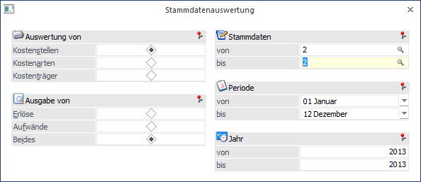
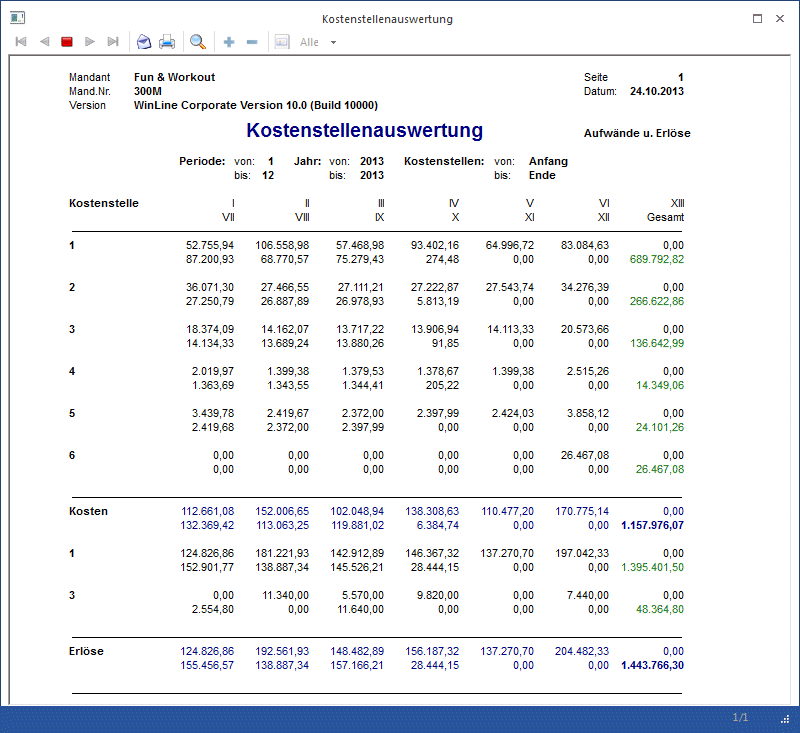

Im Menüpunkt
1 Auswertungen
1 Stammdatenauswertung
werden pro Kostenstelle/Kostenart/Kostenträger einzelne Periodenwerte und die Gesamtsumme der Kosten/Erlöse ausgegeben.

Ø Auswertung von
ü Kostenstellen:
Die Auswertung
erfolgt auf Basis der Kostenstellen. Außerdem wird geprüft, ob der Benutzer die
Berechtigung hat (WinLine KORE/Stammdaten/Kostenstelle) die eingegebene
Kostenstelle zu verwenden.
ü Kostenarten:
Die Auswertung
erfolgt auf Basis der Kostenarten. Es wird außerdem geprüft, ob der Benutzer die
Berechtigung hat (WinLine KORE/Stammdaten/Kostenarten) die eingegebene
Kostenart zu verwenden.
ü Kostenträger:
Die Auswertung
erfolgt auf Basis der Kostenarten. Es wird geprüft, ob der Benutzer die
Berechtigung hat (WinLine KORE/Stammdaten/Kostenträger) den eingegebenen
Kostenträger zu verwenden.
Ø Ausgabe von
Selektieren Sie, ob nur die erfassten Erlöse, die Kosten, oder beide zusammen ausgewertet werden sollen.
Ø Stammdaten von - bis
Durch Eingabe von Stammdatennummern wird die Ausgabe eingeschränkt. Wird die Auswahl ohne Eingabe übergangen, werden automatisch alle Stammdaten ausgewertet.
Ø Periode von - bis
Selektieren Sie die Perioden, die in die Auswertung einbezogen werden sollen. Wird die Auswahl ohne Eingabe übergangen, werden automatisch alle Perioden ausgewertet.
Ø Jahr von - bis
Selektieren Sie das Jahr bzw. die Jahre, die in die Auswertung einbezogen werden sollen. Wird die Auswertung ohne Eingabe übergangen, wird automatisch das aktuelle Jahr vorgeschlagen.
Buttons

Ø Ausgabe Bildschirm
Die Statistik wird am Bildschirm ausgegeben.
Ø Ausgabe Drucker
Die Statistik wird am Drucker ausgegeben.
Ø Ende
Das Fenster wird geschlossen.
